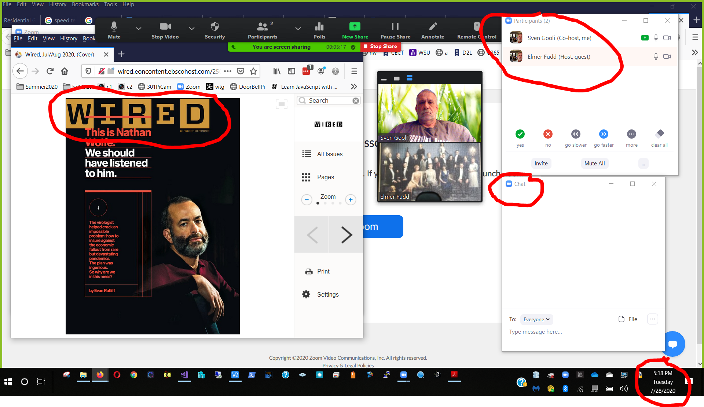

After completing this assignment you will be able to use a computer to
The purpose of this assignment is to learn to use and leverage the Internet to allow communications between geographically dispersed groups. Microsoft Skype, Zoom, email and text messaging are tools that can help you creatively communicate. Some considerations are:
This assignment will cover several basic collaboration methods, you are encouraged to explore on your own to find additional features that will make your life and present or future jobs easier.
The exercises in this assignment can be done in any order.
Conference Calls
Make sure you have Microsoft Teams installed on your laptop. You already have an account, see the link above for login information.
For this assignment set up a Microsoft Teams web conference call involving members of your D2L Summative05 group. Spread out so that all participants are outside of voice range of each other. Feel free to have some members go out in the hall, to an empty classroom, or the Somsen 329 study room. For best results make sure to use either ear buds, or better yet, a headset. If you wish, try this several times, feel free to try it outside of class time.
Choose a topic before you attempt the conference call. Try something like 'the benefits of conference calling' or 'net neutrality' or some mutually agreeable business topic such as 'web conference calls' Each student must answer the following questions regarding the conference call.
1. (50) What were the best 2 factors in the conference call? Possible choices are voice delay, or lack thereof, call volume, clarity....
2. (50) What were the worst 2 factors in the conference call? Possible choices are voice delay, or lack thereof, call volume, clarity....
3. (50) Do you think an application like Microsoft Teams is ready for general business use? What business uses do you envision?
Review the material on the SMS web page at: SMS info
List of worldwide SMS gateway domains: http://martinfitzpatrick.name/list-of-email-to-sms-gateways/ or: http://sms-gateway-service.com/?page_id=13
Feel free to use your email account to send a text message to your cell phone, if you have text messaging. Realize if you send an SMS via email that the receiver may be charged a fee depending on their text message contract.
MMS gateway domains: http://basicstate.com/htm/page.htm
4. (50) What are three ways that a business could make use of SMS via email for improving customer service, without creating SMS spam? Think about automating processes. Ref: http://en.wikipedia.org/wiki/Text_messaging#Text_message_spam
Online communications, collaboration and screen sharing
The purpose of this exercise is to learn how to collaborate and share your screen using Zoom. Login to your MinnState Zoom account. It was setup in Formative00. Review the information at ' Zoom' in the WSU Knowledge Base.
Watch the LinkedIn Learning course 'Learning Zoom' before completing this Exercise.
Log into D2L and find your partner under Communication>Groups>Summative05 Partner Note that most groups have 2 people, there may be a group of 3. Decide which group member will host the meeting in their Personal Zoom meeting room. The host will email their Zoom meeting link to their partner(s). Explore the Zoom meeting interface. Make sure that the Participants and Chat windows are visible. Each group member will take turns sharing their screen. Each group member will open Flipster in their browser, login, and display the latest cover of a magazine (Discover, Wired, Time...) Each group member will Share their screen, displaying the Zoom room and magazine cover, and the other attendees will make a screen shot. The screen shot should be similar to this:

(250) 5. Make a screen shot as described above and save it as 'Ex3' to the ' ' folder.
Leverage your FaceBook skills to build your professional persona. Begin your career today. Sign up for a account.
Connect with me if you would like:
6. (50) What is the value to your career of a tool like Linked In? Ref: Wikipedia info on LinkedIn.
(50) 7. Make a screen shot of your LinkedIn home page Save the screen shot as "Ex4" in your ' ' folder.
Use a web browser to verify that you have published your website to https://classes.winona.edu/... Check that your name, StarID, email, class, semester, section and all of your answers are correct and visible. From the menu choose File>Print... and using "Print to PDF" save a copy of this assignment as a .pdf file in your ' ' folder.
(50) 8. Save your file 'WebPage.pdf' to the ' ' folder.
Create a .pdf file named 'screenshots.pdf' by combining the above screenshots.
Refer to Formative00 and either: Method 1- use File Explorer to drag all screenshots into a blank Word document, and print the document as 'screenshots.pdf' or Method 2- use File Explorer to select all screenshots, righ click and select 'Print' and print the document as 'screenshots.pdf'
(50) 9. Save your file 'ScreenShots.pdf' to the ' ' folder.
Use PDFill or PDF Preview(Mac) to merge the WebPage.pdf file with the ScreenShots.pdf file, and save it as 'Summative05.pdf' in ' ' folder.
(50) 10. Upload your file 'Summative05.pdf' to the D2L 'Summative05' Assignment folder.
Use a browser to view your completed and published website at: https://classes.winona.edu/... Ensure that you have linked this assignment on your home page. Note that your screen shots do not have to be completed to perform this step.